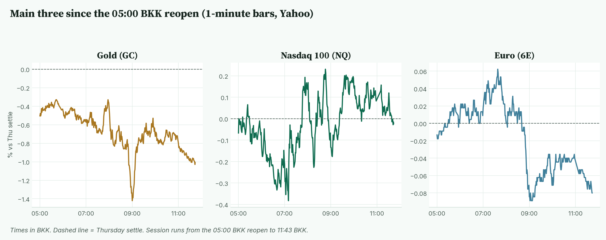
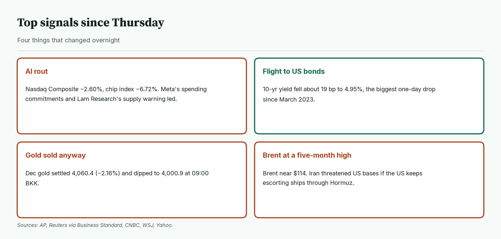
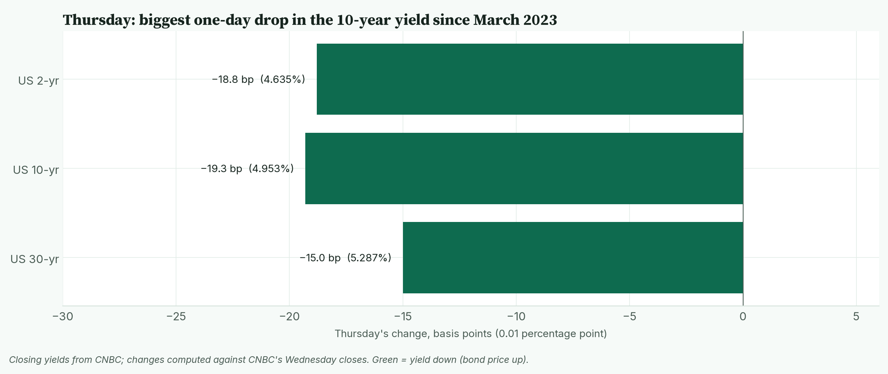
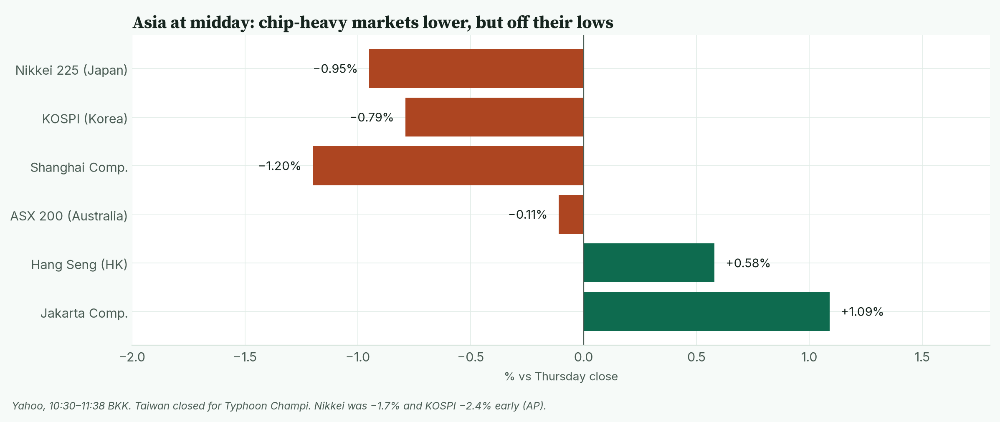
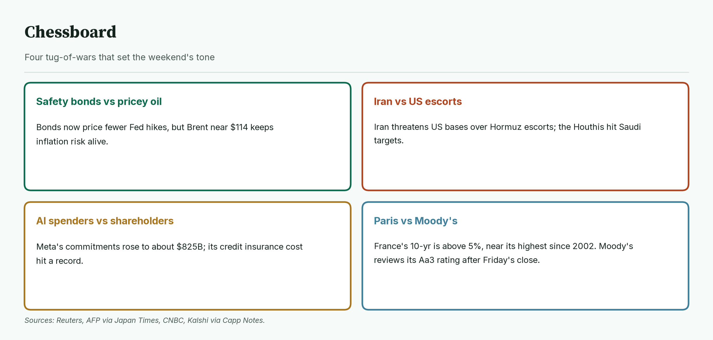
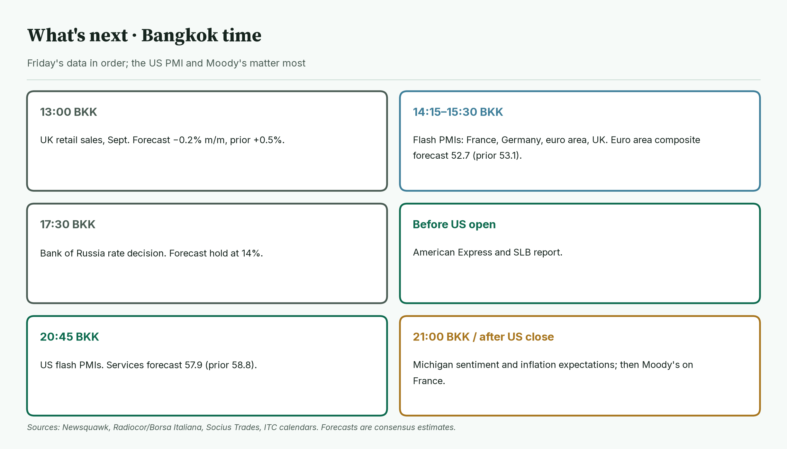
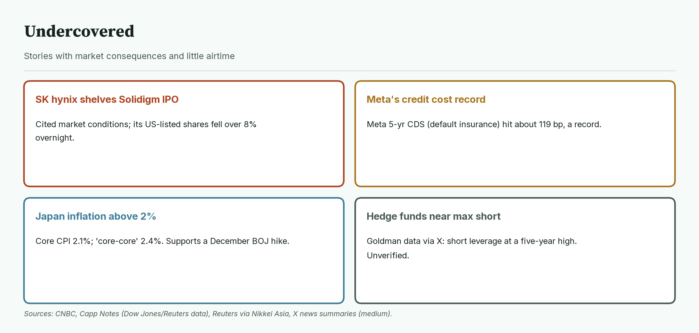
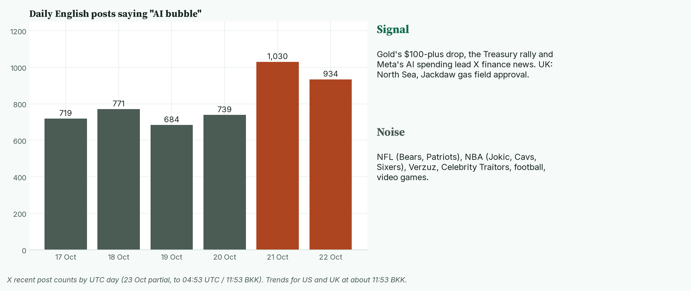

April · Market Intel, pre-London · Fri Oct 23, 2026 · ~12:10 BKK / ~06:10 London
Headline: AI fears sank tech on Thursday, and money rushed into US government bonds. The 10-year yield had its biggest one-day drop since March 2023, to about 4.95%. Gold still fell more than 2% and touched 4,000.9 this morning. Nasdaq futures are flat after a 2.9% drop.
Brent oil is near $114, a five-month high, after Iran threatened US bases. So what: Europe's flash PMIs from 14:15 BKK and the US flash PMI at 20:45 BKK decide whether "slowdown fear" or "oil inflation" wins today. Moody's verdict on France lands after the US close.
1) Main instruments The three main contracts since the 05:00 BKK reopen, as a % move from Thursday's settle. Gold's sharp dip at 09:00 BKK came within a minute of oil's high; Nasdaq recovered from an early dip. |
(Futures are contracts that trade nearly around the clock, so they show the mood before markets open. Quotes are from the Yahoo Finance futures feed at 11:43 BKK (04:43 UTC), about 10 minutes delayed. Ranges run from the 05:00 BKK reopen to 11:43 BKK on 1-minute bars, with bars present from 05:00.)
- Gold futures (GC, Dec): 4,019.4, −1.01%, at 11:43 BKK. Driver: oil near $114 keeps traders braced for higher interest rates, and gold pays no interest. Thursday's settle was 4,060.4, down 2.16% from Wednesday's 4,150.0 (Yahoo; CNBC shows the same settle). Today's range is 4,000.9 (09:00 BKK) to 4,047.8 (05:42 BKK), matching CNBC. Spot gold was flat near $4,022 after a nearly 3% drop on Thursday (Reuters via Business Standard).
- Nasdaq 100 futures (NQ, Dec): 29,136.50, −0.02%, at 11:43 BKK. Driver: dip buyers are testing whether Thursday's AI selloff went too far. NQ settled at 29,142.00 on Thursday, down 2.88% from 30,007. Today's low is 29,022.75 (07:10 BKK); the high is 29,212.50 (08:46 BKK).
- Euro futures (6E, Dec): 1.1235, −0.07%, at 11:43 BKK. Driver: the dollar is firming slightly in Asia, and French bond stress is unresolved before Moody's. The settle was 1.1243. Today's range is 1.1232 (09:08 BKK) to 1.1250 (07:38 BKK), a narrow range. Spot euro is 1.1213, −0.08% (Yahoo, 11:52 BKK).
- Takeaway: gold is the weak one this morning; Nasdaq and the euro are waiting for data.
Context. The dollar index (DXY, the dollar against six major currencies) is 101.68, +0.07% (Yahoo, 11:43 BKK). The 10-year US yield (what the US government pays to borrow for 10 years) is 4.97%, up 1.7 basis points (CNBC, 11:51 BKK; a basis point is 0.01 percentage point), after falling about 19 bp on Thursday. The VIX (the "fear gauge" built from S&P 500 option prices) closed Thursday at 19.03, +14.09% (Cboe via Yahoo). US oil (CL, December) is 100.12, +0.65%; Brent is 113.72, +0.49% (CNBC, 11:42 BKK) after settling at $113.17, its highest since May 4. S&P 500 futures (ES) are 7,695.00, −0.12% (11:43 BKK). Bitcoin is $81,539, +0.27% since 00:00 UTC (Yahoo, 11:53 BKK).
2) Top signals Four overnight changes. AI fear hit stocks, bonds caught the safety money, and gold fell anyway as oil climbed. |
- AI rout. The Nasdaq Composite fell 2.60% to 26,008.86. The chip index fell 6.72%. (High: AP, Capp Notes)
- Bond rush. The 10-year yield fell about 19 bp, its biggest drop since March 2023. (High: Reuters, WSJ)
- Oil climbs. Brent is at a five-month high near $114. (High: AP, CNBC)
- Takeaway: investors fear an AI slowdown and oil inflation at the same time.
3) Rates, FX and oil Thursday's moves in US government yields. Short and long yields both fell hard as money fled to safety. |
- US yields at Thursday's close: 2-year 4.635%, 10-year 4.953%, 30-year 5.287% (CNBC). Changes are computed from CNBC's Wednesday closes.
- Mentor: bond prices rise when yields fall. A falling 2-year yield means traders expect fewer Fed rate hikes.
- Fed bets eased. A December hike is now about 85% priced, no longer fully priced (Reuters). Kalshi shows about 90.5% odds of a hold at the Oct 27–28 meeting (via Capp Notes).
- The yen swung both ways. The dollar fell to 156.08 yen after Japan's inflation beat, then bounced to 156.96 (CNBC, 11:52 BKK).
- Japan's core inflation hit 2.1%, above the Bank of Japan's 2% target for the first time in nine months (Reuters via Nikkei Asia).
- Oil. Brent hit 114.72 (CNBC) and WTI 100.97 at 09:01 BKK (Yahoo). Iran threatened to hit US bases if the US keeps escorting ships through Hormuz (AFP via Japan Times).
- Takeaway: bonds are pricing a slowdown, while oil is pricing a supply shock.
4) Why it matters Asia at about 10:30–11:38 BKK. Japan, Korea and China are lower but well off their early lows; Hong Kong and Jakarta are up. |
Thursday was an AI financing scare more than an earnings problem.
- Meta fell 6.98% after disclosing about $825 billion in future lease and contract commitments (Capp Notes).
- Lam Research fell 11.76% after warning of supply limits into 2027. AMD fell 8.1%; Nvidia fell 4.4%. (Capp Notes; CNBC)
- Most stocks actually rose. NYSE gainers beat losers 2,319 to 1,596, and staples rose 3.31%. (Capp Notes)
- Asia followed only partly. The Nikkei is −0.95%, after being −1.7% early (Yahoo; AP). Taiwan is closed for a typhoon.
- Mentor: when money leaves one hot sector but stays in stocks, it is a rotation, not a panic.
- Takeaway: for Nasdaq, the question is whether AI chip buyers come back; for gold, whether oil keeps rate fears alive.
5) Chessboard Four tug-of-wars into the weekend. Oil and France carry the weekend risk. |
- Safety bonds vs pricey oil. Lower yields usually help gold, but oil is keeping inflation fears alive. (High: Reuters)
- Iran vs US escorts. The Houthis claimed attacks on Saudi targets, including an Aramco facility. Iran's threat against US bases is a stated threat, not an action. (Medium: AFP, Capp Notes)
- AI spenders vs shareholders. Meta's five-year CDS (insurance against default) hit a record of about 119 bp (Capp Notes).
- Paris vs Moody's. France's 10-year is above 5%, near its highest since 2002. Moody's reviews its Aa3 rating, now on a negative outlook, after Friday's close (ITC; Newsquawk).
- Takeaway: the weekend holds two shocks in waiting: Gulf escalation and a French downgrade.
6) Leading indicators (BKK times) Friday's schedule in Bangkok time. Europe's PMIs set the euro's tone; the US PMI sets the Fed debate. |
- 13:00: UK retail sales for September. Forecast −0.2% month on month, prior +0.5%. (Radiocor)
- 14:00: London opens.
- 14:15 to 15:30: flash PMIs (fast business surveys; above 50 means growth) for France, Germany, the euro area and the UK. Euro area composite forecast 52.7, prior 53.1. (Radiocor)
- 17:30: Bank of Russia decision. Forecast hold at 14%. (Radiocor)
- Before the US open: American Express and SLB report. (Newsquawk)
- 20:45: US flash PMIs. Services forecast 57.9, prior 58.8. (Radiocor)
- 21:00: Michigan consumer sentiment and inflation expectations. One-year expectations were 4.7%. (Socius Trades)
- After the US close (early Saturday BKK): Moody's on France. Exact time not confirmed.
- Levels to watch: GC 4,000.9 and 4,047.8. NQ 29,022.75 and 29,212.50. 6E 1.1232 and 1.1250. 10-year 5.00%. Brent 114.72.
- Takeaway: the euro area PMI at 15:00 BKK and the US PMI at 20:45 BKK are today's deciders.
7) Undercovered Four stories with little airtime. Each touches AI funding, Japanese rates or market positioning. |
- SK hynix halted its Solidigm IPO review, citing market conditions. Its US-traded shares fell about 8% overnight. (High: CNBC)
- Meta's default insurance hit a record, about 119 bp. (Medium: Capp Notes)
- Japan's "core-core" inflation is 2.4%. It is the Bank of Japan's preferred gauge, and it supports a December hike. (High: Reuters via Nikkei Asia)
- Hedge funds are near a record short. Goldman data reportedly shows short leverage at a five-year high. (Low-medium: X news summary; not checked against Goldman)
8) What's trending on X (~11:53 BKK) Daily English posts saying "AI bubble", plus today's trends sorted into signal and noise. AI-bubble talk jumped about 40% on Oct 21 and stayed high. |
- US: Bears, Caleb, Jokic, Patriots, #VERZUZ, James Dolan.
- UK: Bioware, #CelebrityTraitors, AC Milan, North Sea, Jackdaw, Bond.
- Signal: the UK approved the Jackdaw gas field, which could lift UK gas output by 6% at peak (Medium: X news summary). Finance chatter centers on gold's $100-plus drop and the Treasury rally (Medium: X news summaries).
- Mood, not evidence: Tom Lee called the end of the AI selloff on CNBC; Peter Schiff called gold's drop a buying chance.
- Data point: "AI bubble" posts hit 1,030 on Oct 21 and 934 on Oct 22, versus about 700 to 770 a day before. (X post counts)
- Noise: NFL, NBA, Verzuz, reality TV, football and video games.
Bottom line
Bonds say slowdown, oil says inflation, and gold is caught in the middle. For Jim: gold must hold 4,000.9, today's low; a break puts the round 4,000 in play. Nasdaq is flat at 29,136.50 and needs to clear 29,212.50 to show buyers are back. The euro sits in a tight 1.1232 to 1.1250 range before the PMIs. Interpretive note: Friday after a big down day often brings position squaring before the weekend. With Gulf risk and Moody's both hanging over the weekend, expect caution. That is a read, not a forecast.
Confidence: Futures levels: high for direction, medium-high for the exact tick (Yahoo feed; gold and euro ranges match CNBC). US closes and yields: high (AP, Reuters, CNBC, WSJ). Yield changes: computed from CNBC closes. Meta, Lam and CDS figures: medium (Capp Notes newsletter summarizing Dow Jones and Reuters). Iran threat: reported by AFP, not independently confirmed. Moody's timing: after the close, exact hour unconfirmed. Hedge fund short data: low-medium (X summary). X news summaries: medium.
Charts: /workspace/april-charts/2026-10-23/pre-london-{scoreboard,main3,signals,rates,asia,chess,leading,under,xsplit}.png |